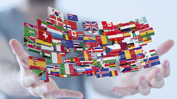
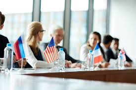
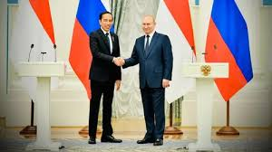

  
Dengan Quality Education (Pendidikan berkualitas)
- Pertukaran pengetahuan dan pengalaman
- Bantuan keuangan
- Program beasiswa
- Penelitian bersama
Contoh :
1. Program PBB: UNESCO, UNICEF, dan organisasi PBB lainnya memiliki berbagai program yang bertujuan untuk meningkatkan akses dan kualitas pendidikan di seluruh dunia.
2. Organisasi Non-Pemerintah (NGO): Banyak NGO yang fokus pada pendidikan, seperti Save the Children, bekerja sama dengan pemerintah dan masyarakat untuk meningkatkan akses pendidikan, terutama di negara berkembang.
3. Kemitraan bilateral dan multilateral: Negara-negara sering kali menjalin kemitraan bilateral dan multilateral untuk meningkatkan kerjasama dalam bidang pendidikan.
Kerjasama internasional merupakan faktor yang sangat penting dalam mencapai tujuan SDGs yaitu Kualitas Pendidikan. Melalui pertukaran pengetahuan, peningkatan kemauan meraih ilmu, dan dukungan finansial, kerjasama internasional dapat membantu negara-negara mengatasi tantangan pendidikan yang kompleks dan memastikan bahwa semua anak memiliki kesempatan untuk mendapatkan pendidikan yang berkualitas.